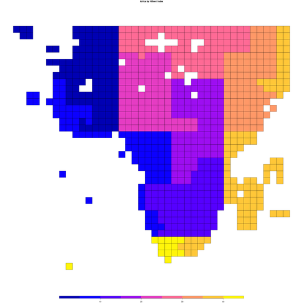

Calculates malaria’s control reproductive number (Rc) from malaria parasite prevalence (PfPR) and treatment rates.
If we know the PfPR and some information on treatment rates, this converts those numbers into an estimate of Rc. That estimate is one way to understand transmission intensity in a region.

Installation
- To install the
rampdatapackage, useremotes::install_github("dd-harp/rampdata"). - To install
rhdf5, go to the rhdf5 install page.
The rest should happen through regular installation.
remotes::install_github("dd-harp/globalrc")What does this do?
The two inputs have usually been just under a GB.
Malaria parasite prevalence in humans (PfPR), as a set of GeoTIFFS, one per time interval, which could be a year or month. These can be draws, so that there are 100 per time interval.
Treatment rate with anti-malarials (AM), as a set of GeoTIFFs, as above.
This produces about six outputs, which are over a GB. These are GeoTIFFS and PNG images for review of the data. For each one, there are quantiles and, possibly, draws.
- Annual EIR
- Kappa
- Vectorial capacity
- Rc
- Force of infection
- Alpha
This code is designed to help us focus on the core science without worrying about the software challenges. It does a lot of work, in the background, and then calls one function, called pixel_work, that does the scientific calculation. That way, we can refine the pixel_work function in a notebook, explore its behavior, and then put it into this package to run it on large datasets with many draws.
This code takes the input, breaks it into arrays with a block size. For instance, if there are 20 years and the block size is 32, it creates 20 x 1024 arrays of values. It removes NA values. It sends these values to one little function that processes this array as a set of 1024 time series of length 20. Then it takes the output arrays from that little function and reassembles them back into lots of GeoTIFFs at the end.